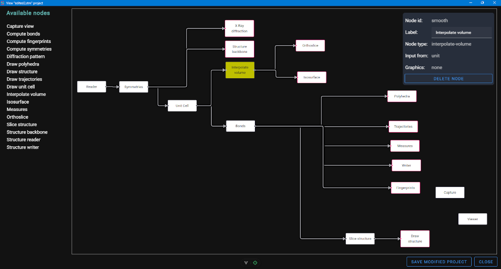
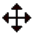

The loaded project structure could be seen and changed using the File → Project editor menu entry. This entry opens the Project editor in its own window depicted below.

The window title contains the filename of the currently loaded project or the “default project” mark.
The leftmost column, labelled “Available nodes”, list all the nodes types provided by the application.
Nodes from this column could be dragged to the graph chart on the right to create a new node in the project. In the name an unique string in parenthesis marks these created nodes.
Clicking a node in the graph chart marks it as selected with a yellow background. Clicking on the chart background deselects it. When a node is selected, its data is visualized in a panel shown at the top right of the chart. The label of the node could be edited in this panel. With a button on the panel, the node could be deleted after asking for confirmation.
The nodes’ positions could be changed by dragging the nodes around. To move a group of nodes use shift-drag to draw a rectangular selection, then drag them. Using ctrl-click multiple nodes could be selected. For multi node selections the panel show info only for the last node selected.
The connection between nodes is done clicking on the output port (the rightmost one) and, when the cursor becomes a cross  , dragging it to a free input port (the left one). If a connection is redone, it is deleted.
, dragging it to a free input port (the left one). If a connection is redone, it is deleted.
Going to one end of the connection the cursor changes to

then this end can be drag to another connection point.The graph could be zoomed using the mouse wheel.
At the end, “Save modified project” asks for a project filename (.stm), save here the modified project and load it in the application. A confirmation dialog appears if the project has modifications. Closing the window with the “Discard” button loses the changes. If there are errors (unconnected ports) the project cannot be saved.
Note that the order of entries in the project file, and thus in the Node selector, is determined by the left-to-right and then top-to-bottom order of the nodes in the editor.
The “New project” button empties the graph leaving only the “Viewer” node to build a new graph. This button is enabled only when there are no pending changes to be saved in the graph.
The graph display uses the excellent Vue Flow component.
The code for checking the absence of loops in the project graph has been ported from: Detects loops in a directed graph using a graph coloring algorithm.